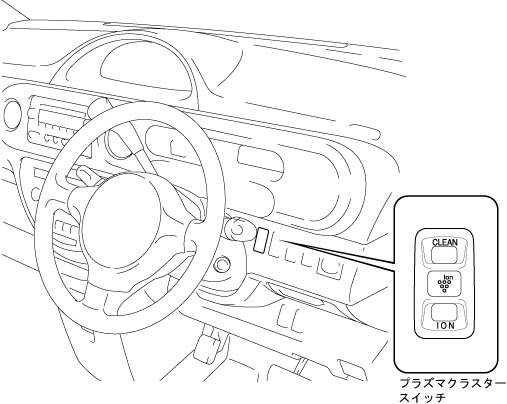

| プラズマクラスター発生器 |
| ● |
150rグレードの全車及び130iグレードのCパッケージに除菌効果のあるイオンを発生させて，送風とともに車室内に供給するプラズマクラスター（R）*1を採用しました。
|
| ● |
このシステムは車室内の浮遊菌を不活性化*2，ダニアレルゲン*3の作用を抑えるなどの働きがあります。また，イオンの発生モードはクリーンモードとイオンコントロールモードの2つがあり，モードの切り替えはステアリングコラム右下に配置されたスイッチにて切り替えます。またこのシステムはブロワスイッチと連動しています。
|
|  |
| 参 考 |
| ＊1 |
プラズマクラスター，プラズマクラスターイオン及びPlasmaclusterはシャープ株式会社の商標です。
|
| ＊2 |
活動を抑制すること。
|
| ＊3 |
ダニアレルギー反応を起こす抗原物質の名称。
|
 クリーンモードの作動 クリーンモードの作動
|
| イオンコントロールモードの作動
|